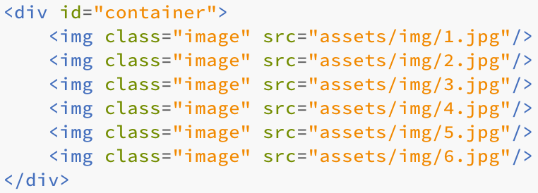
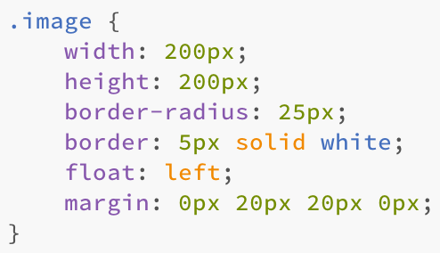
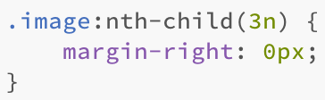
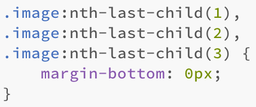
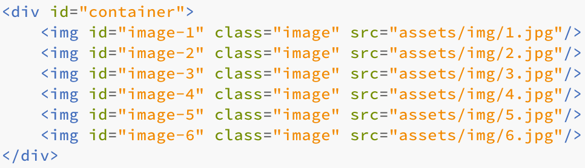

Download the hands-on zip folder into your computer and decompress it. Now open start.html in sublime.
As you can see in the HTML code, the six images share the same class.
We only need one css style to define the appereance for all elements of the same class
Lets try to fit only 3 photos per row. To do this, we first need to set the margin-right of each 3rd element to 0. We are going to use the nth-child selector
And now lets uce calc to set the width to the summation of the three images plus 2*20px of padding.

We also want to eliminate the bottom margin for the third last elements. To do this, we use the nth-last-child selector. We can have multiple selectors with the same attributes.
Using the id selector we can specify the appereance of each photo individually. Lets proceed and assign a unique id for each image. Note: You can only use an id for one element or it won't work.
Create a new class in your css file for each id. Now set the border-color of each image to a different color.
You will get something like this:

To end, we are going to use the :hover selector which enable us to define an appereance for when the user hovers on the selected element.